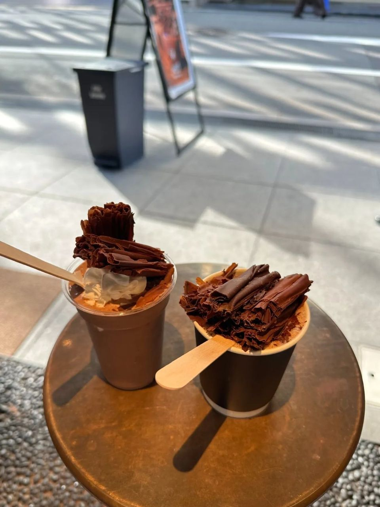
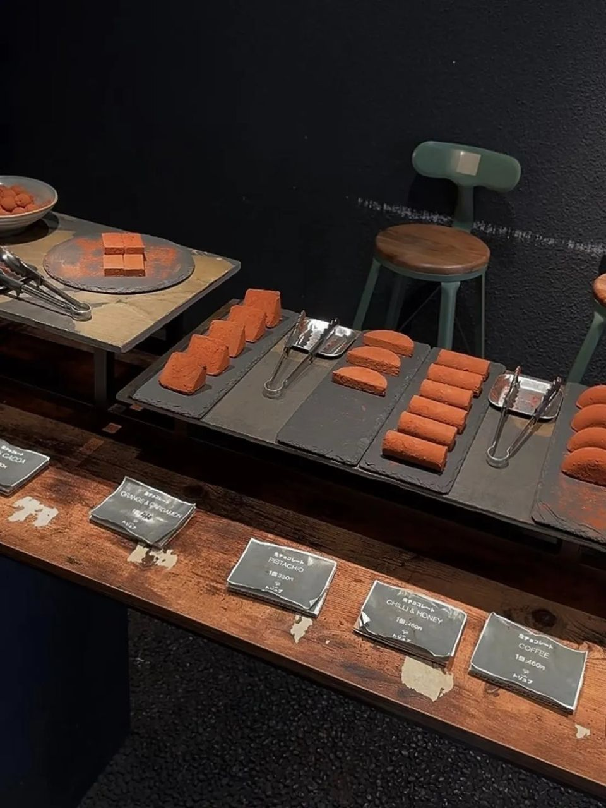

오사카 초콜릿 카페 Melt Chocolate, 초콜릿 수북한 음료와 생초콜릿 후기
음료 위에 초콜릿을 얇게 갈아 수북하게! 피스타치오·오렌지·칠리 허니 생초콜릿까지.
초콜릿을 이렇게까지 쌓아 준다고요?? 🍫
오사카 초콜릿 전문점 Melt Chocolate에서
음료 한 잔에 깜짝 놀랐던 후기,
지금부터 풀어볼게요!

1. 비주얼부터 반칙! 초콜릿 수북 음료
음료 위에 초콜릿을 얇게 갈아서
수북하게 올려 줘요 ㅎㅎ
2. 초콜릿 올려 주는 모습도 구경!
음료 위에 초콜릿 조각을 하나하나 올려 줘요.

3. 하나씩 골라 먹는 생초콜릿!
초콜릿 전문점답게 생초콜릿 종류도 다양해요.
- 피스타치오: 고소하고 진한 맛
- 오렌지: 상큼한 오렌지에 향긋한 향신료를 더한 맛
- 칠리 허니: 달콤한 꿀에 매콤한 고추를 더한 맛
4. 총평
평범한 초콜릿부터 독특한 조합까지,
하나씩 골라 먹는 재미가 있어요.
- 추천: 초코 좋아하는 분, 오사카에서 카페 찾는 분
초코 좋아하시면 그냥 지나치기 힘든 곳이에요 🤎